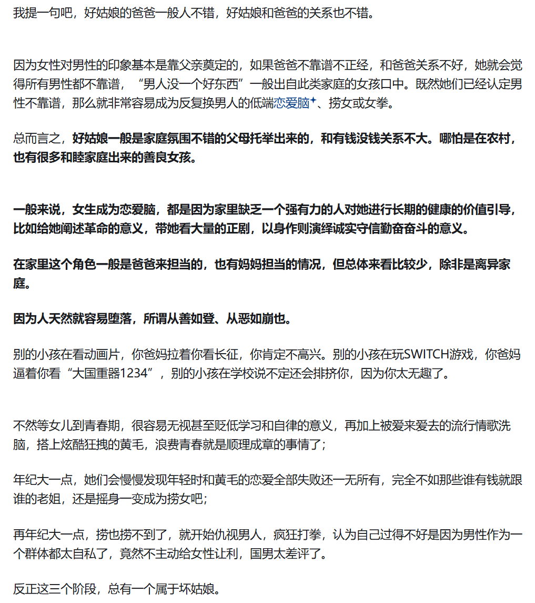

# 飞天
来源 B 站
当万户夹杂着铁粒的火舌，被超低温氢氧的烈焰所代替。我才知道，我们早已在征途上。
# 哈基米
来源知乎
很多人绝对低估了猫狗在互联网的重要性。
你们根本不知道，一个恨儿童、恨老人、恨同事、恨同学、恨同性、恨异性、恨人类的类人生物，如果失去了在犬科和猫科动物面前展现自己仅存且廉价同情心的机会，这对它们意味着什么。
# 忘了以前做什么？
来源知乎
扬州瘦马现代版
南宋南明 + 预警版
以后会有更多人站在朱熹 * 这边，哪怕他们不知道朱熹都说过什么，也不知道自己的观点与朱熹观点重合
宋朝时期，大量权贵富豪喜欢奢靡享乐，催生出了扬州瘦马产业，有专门的培养机构，从女孩八九岁开始招募，提供食宿才艺培养，专门用来侍奉权贵富豪，堪比宋代韩国女团
百姓为了赚钱，把女儿送去培养成扬州瘦马，不以为耻，反以为荣。朱熹看到这种世风日下，道德沦丧，礼崩乐坏的局面，大搞理学，提出了存天理
灭人欲，娶妻纳妾，属于正常欲望，是天理，可存
骄奢淫逸，社会糜烂放纵，是人欲，要灭
历史惊人的巧合
应对方法也只能是重新搞理学，存天理灭人欲了；坐看理学被恢复名誉，朱子被重新封圣
那些主张黄色相关产业继续开放的人，可以看到扬州瘦马大行其道后，年轻女人找到了捷径，开始选择这条路线捞钱，其他女生也放弃卷学业事业，开始走捷径，男人进一步觉得女人堕落，嫌弃配偶可能是从良的，更加瓦解婚姻生育，男人看到女人可以赚快钱，反过来瞧不起自己的血汗钱，也会停止卷学业事业，跑去捞偏门，社会进一步堕落，治安恶化
其实现在就有女中学生搞颜色直播的，流出大量视频，早就已经问题严重了
这种事情导致的社会堕落，可不是能固定在某个程度就不会下坠的。一般情况下，礼崩乐坏会导致整个社会下坠到极限，酿出国破家亡，才会重新洗牌，重新塑造礼乐秩序，除非天降圣人，像朱子那样用重塑礼制，把社会拉回正规
明末江南也在堕落中，可惜南明没有朱子，没人能重塑礼制，重新安定民心
这种堕落社会在外敌面前，不堪一击，底层男人都懒得守护上层的堕落享受，宁可双输都懒得单输
# 鉴人
来源知乎

# emo
平等的歧视每一个空洞的灵魂，用无聊的抽象伪装自己
# 天地同力
西汉《盐铁论》
富在术数，不在劳身；利在势局，不在力耕